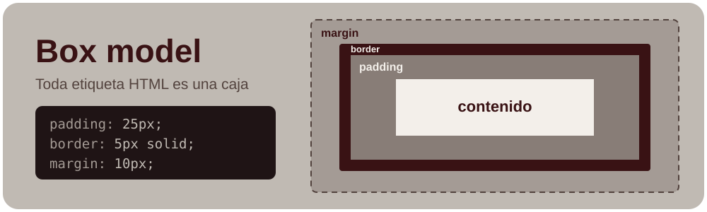

Las 4 capas
contenido
→ padding
→ border
→ marginToda caja tiene, de adentro hacia afuera: contenido, relleno, borde y margen.

En CSS todo elemento es una caja con cuatro capas: el contenido, el padding (relleno), el border (borde) y el margin (margen). Las cajas pueden ser de bloque, que ocupan toda la línea, o en línea, que fluyen con el texto. Entender cómo se suman estas capas te dice cuánto mide de verdad cada elemento.
contenido
→ padding
→ border
→ marginToda caja tiene, de adentro hacia afuera: contenido, relleno, borde y margen.
.box {
width: 350px;
height: 150px;
}Es donde se muestra el contenido. Se mide con width y height.
.box {
padding: 25px;
}Espacio entre el contenido y el borde. El fondo se ve detrás y no puede ser negativo.
.box {
border: 5px solid black;
}Envuelve al contenido y al padding. Está entre el padding y el margin.
.box {
margin: 10px;
}Espacio invisible por fuera del borde que aleja a los demás elementos.
width: 350px;
padding: 25px;
border: 5px solid;Es el del navegador por defecto. Ancho real: 350 + 25 + 25 + 5 + 5 = 410px.
.box {
box-sizing: border-box;
}Con la misma caja, el ancho visible es 350px: el padding y el borde se restan del contenido.
html { box-sizing: border-box; }
*, *::before, *::after {
box-sizing: inherit;
}Truco común: todos los elementos heredan el modelo alternativo.
p, h1 {
display: block;
}Empiezan en una línea nueva, respetan width y height y ocupan todo el ancho.
span, a, em {
display: inline;
}No saltan de línea e ignoran width, height y los márgenes de arriba y abajo.
ul {
display: flex;
}La lista sigue siendo de bloque por fuera, pero sus li se ordenan en fila por dentro.
ul {
display: inline-flex;
}Por fuera se comporta en línea y por dentro sus hijos son elementos flex.
span {
display: inline-block;
width: 80px;
}No salta de línea, pero sí respeta width, height, padding y margin.
.one { margin-bottom: 50px; }
.two { margin-top: 30px; }Dos márgenes verticales que se tocan se fusionan: el espacio es 50px (el mayor), no 80px.
.two {
margin-top: -10px;
}Si uno es negativo se resta: el espacio queda en 50 − 10 = 40px. Puede superponer cajas.
.container {
border-top: 5px dotted green;
border-bottom: 20px double;
}Da ancho, estilo y color a un solo lado: -top, -right, -bottom o -left.
.box {
border-top-style: dotted;
border-right-width: 20px;
border-bottom-color: hotpink;
}Cambian una sola propiedad de un solo lado del borde.
.links-list a {
padding: 1em 2em;
display: inline-block;
}Con inline-block el padding del enlace se respeta y crece el área para hacer clic.